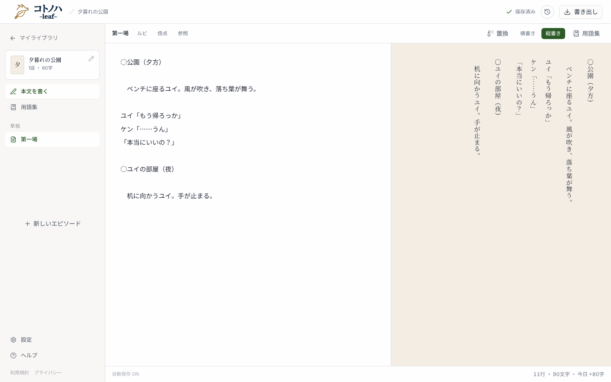
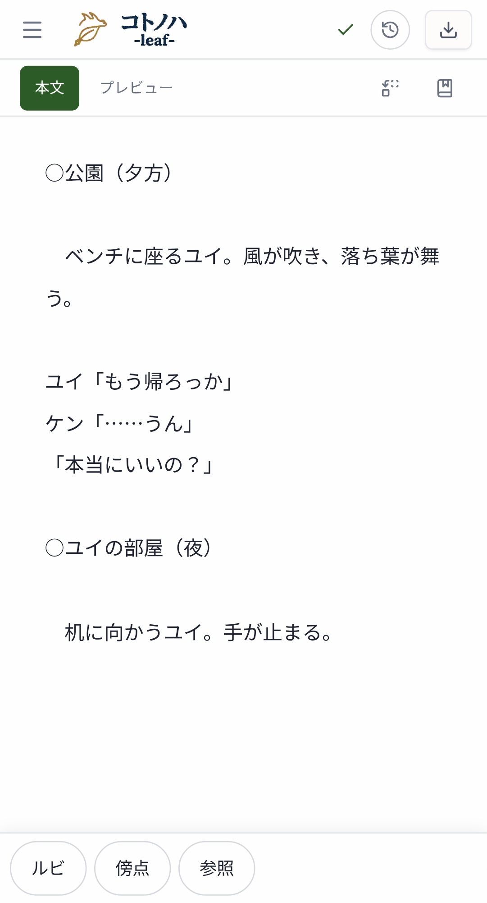
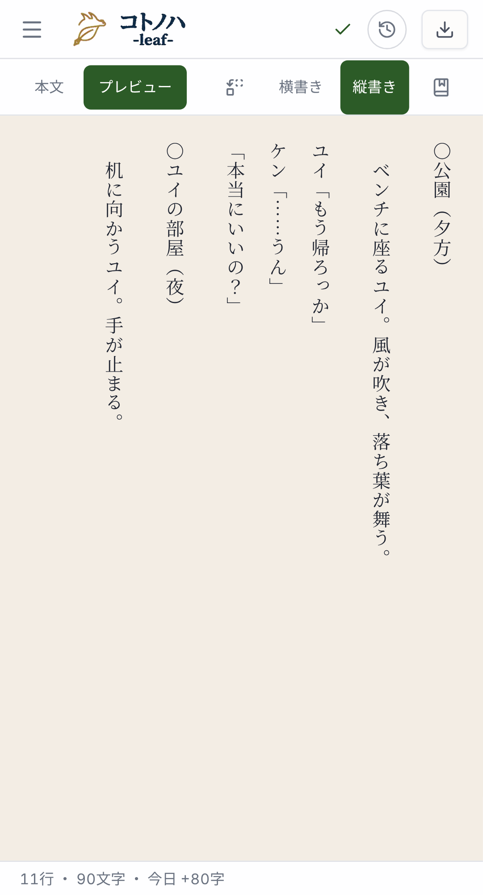
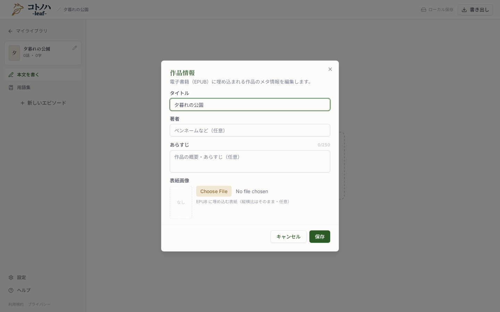
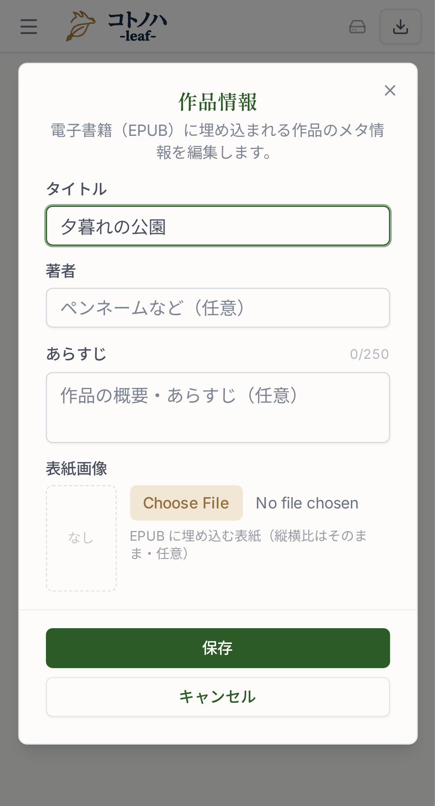
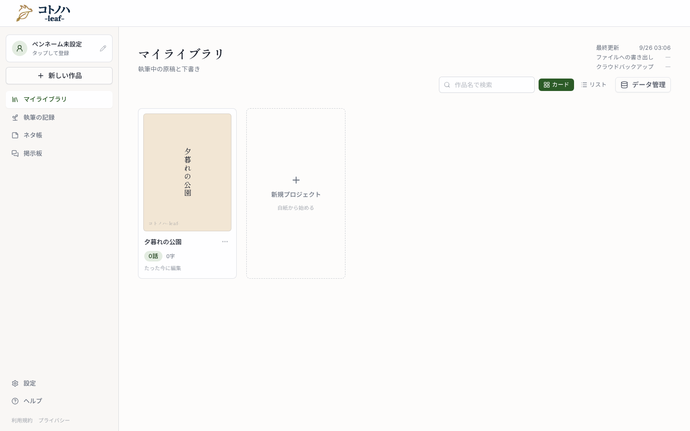
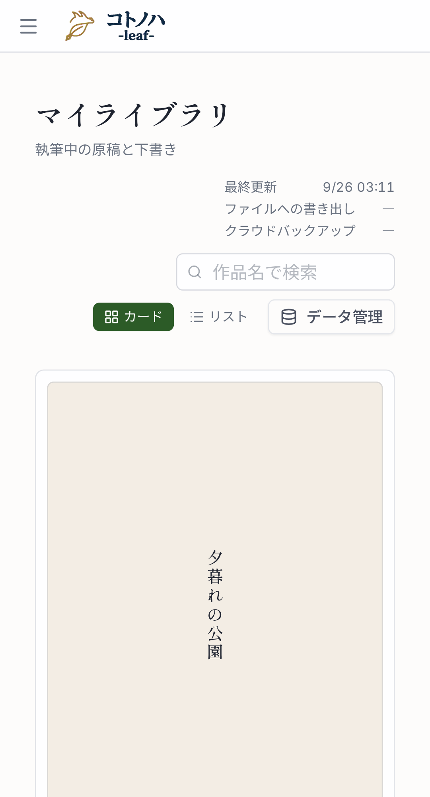
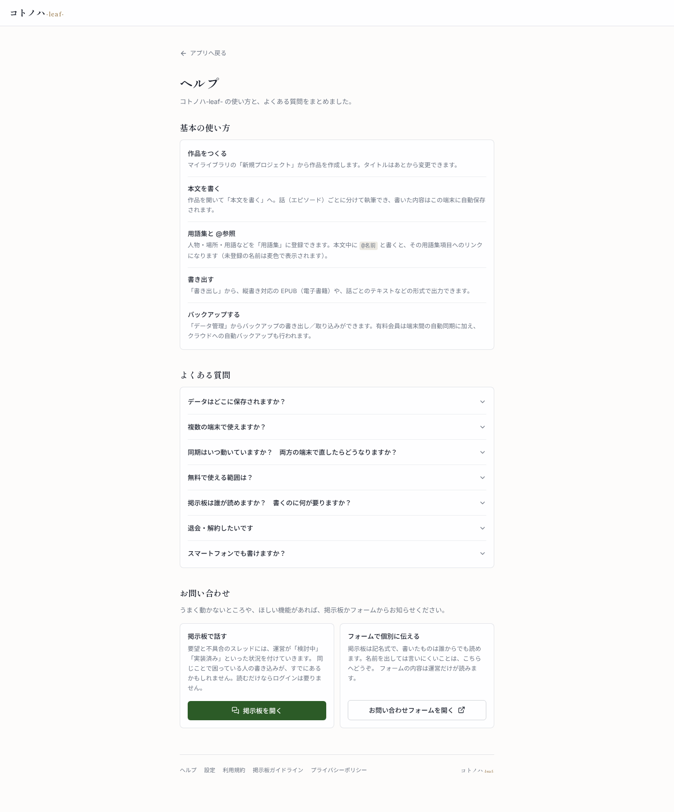

○公園（夕方）
ベンチに座るユイ。風が吹き、落ち葉が舞う。ゆっくりと空を見上げ、息を吐く。
ユイ「もう帰ろっか。今日はなんだか疲れちゃった。明日も早いし、そろそろ行こう」
ケン「……うん」
ユイ（声）「本当にいいの？」
「……」
○ユイの部屋（夜）
机に向かうユイ。手が止まる。
作品ごとに「形式：脚本」を選ぶと、行頭の書き方だけで柱・ト書き・セリフを見分けて描きます。本文の文字はそのまま。左が現状のスクショ、右が変更後のモックです。
脚本の作品でだけ、記法ボタンに「柱」「セリフ」が加わります。ト書きにボタンはありません（何も付けない行がト書き）。


○ を入れる）と セリフ（「」 を入れてキャレットを内側へ）。脚本の作品のみ。ショートカットは足さない。例：「ユイ」の直後で「セリフ」を押す → ユイ「｜」（｜がキャレット）。
同じ本文が、小説なら今までどおりの段落、脚本なら柱・ト書き・セリフの体裁で描かれます。縦書き・横書きの両方に効きます。

○公園（夕方）
ベンチに座るユイ。風が吹き、落ち葉が舞う。ゆっくりと空を見上げ、息を吐く。
ユイ「もう帰ろっか。今日はなんだか疲れちゃった。明日も早いし、そろそろ行こう」
ケン「……うん」
ユイ（声）「本当にいいの？」
「……」
○ユイの部屋（夜）
机に向かうユイ。手が止まる。
margin-block-start: 1lh）。padding-inline-start: 3em）。本文に打った行頭の全角空白は描画時に落とし、二重字下げにしない。ユイ（声） のような補足も話者に含む。名前なしの 「…」 は話者なしのセリフ。行頭を空けた行は中に「」があってもト書き。小説に切り替えると、出力 HTML は現状と 1 バイトも変わりません（回帰テストで固定）。ルビ・傍点・@参照は脚本でも今までどおり効きます。
形式の切替口はここだけ。「あらすじ」の下に「形式」を足し、ラベル横のⓘで判別ルールを説明します（既存の FieldHelp）。


作品の情報を編集します。EPUB やコトノハ-grove- に反映されます。
脚本の作品には「N話」の隣に「脚本」バッジ。小説の作品には何も出ません。


Badge variant="secondary"・wheat 系）。カードと行の両方。「脚本を書く」の節を 1 つ足します。ダイアログのⓘと同じ 3 行のルールに、ボタンと書き出しの説明を添えます。

作品情報で形式を「脚本」にすると、行頭の書き方で柱・ト書き・セリフを見分けます。特別な記号を覚える必要はありません。
○で始まる行は柱です。場所と時間を書きます。「」が続く行はセリフです。ユイ（声）「…」のように名前のあとに補足を 1 つ付けられます。名前を省いた「…」だけの行も、話者なしのセリフになります。「」があってもト書きです。ツールバーの「柱」と「セリフ」を押すと、○や「」が入ります。ルビ・傍点・@参照は小説と同じように使えます。
EPUB・なろう・カクヨムへ書き出すときも、この体裁で出ます。コトノハ-grove- に投稿した作品も脚本として表示されます。
プロトタイプにはない変更。設計の根拠は design.md を参照。
| 出力先 | 脚本の作品 | 小説の作品 |
|---|---|---|
| EPUB | 各話 XHTML に sc-* クラス、style.css に体裁 | 変わらない |
| なろう／カクヨム／テキスト | ト書き行の行頭空白を全角 3 つに揃える。柱・セリフは打ったまま | 変わらない |
AI 向けテキスト・MCP get_work | 正規化しない。先頭に 形式: 脚本 の行 | 変わらない |
| コトノハ-grove- | バンドルに format: "script" を載せ、契約 v7 で送る | 載せない・版も上げない |
grove（別リポ）が v7 を受けてから、leaf の v7 送信をリリースします。
// src/core/schema/index.ts — Work に optional で追加
format: z.enum(['novel', 'script']).optional()
// 未設定＝小説。'novel' は保存しない（未設定に正規化）
// MCP set_work_meta（渡した項目だけ書き換える）
{ work_id, format: "script" } // 脚本にする
{ work_id, format: "novel" } // 小説に戻す（キー削除）
本文は今までどおり純テキスト → Block[]。演出譜の blockId アンカーも同期スナップショットもそのまま効きます。